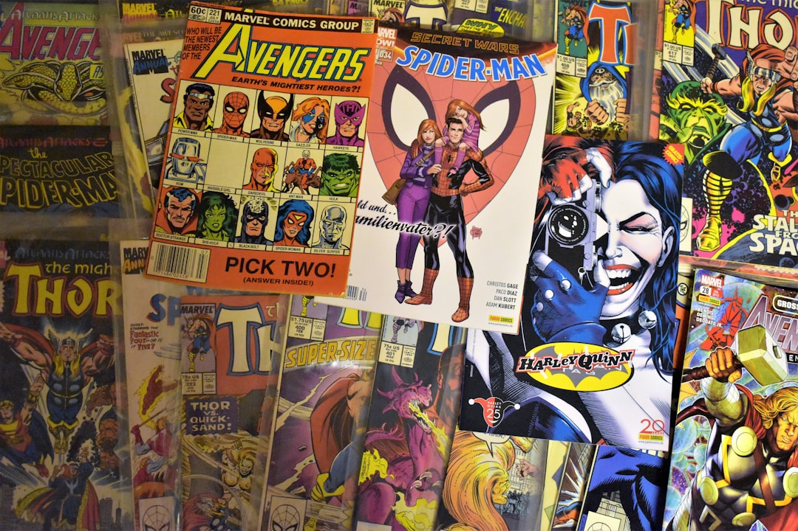

News
無料漫画サイト
無料漫画サイト
人気の無料漫画サイト
安全なサイトの選び方
ジャンル別おすすめサイト
漫画アプリ
漫画アプリ
おすすめの無料漫画アプリ
アプリの機能比較
オフラインで読む方法
著作権と倫理
著作権と倫理
海賊版サイトのリスク
合法的に無料で読む方法
漫画業界への影響
About Us
なぜ漫画が無料で読めるのか？
Jul 11, 2025
なぜ漫画が無料で読めるのか？ 近年、インターネットを通じて漫画を無料で読むことができるサイトやアプリが増えてきています。この現象にはいくつかの理由があります。まず第一に、デジタル技術の進化があります。スマートフォンやタブレットが普及したことで、多くの人々が手軽にインターネットにアクセスできるようになり、それに伴って電子書籍市場も拡大しています。 次に、広告モデルの導入です。多くの無料漫画サイトは広告収入によって運営されています。ユーザーは漫画を読む際に表示される広告を見ることで、そのサイトが収益を得ています。このビジネスモデルは、ユーザーから直接お金を取らずにサービスを提供することができ、多くの利用者を集めることができます。 さらに、新しい作品や作家を広めるためのプロモーションとして無料公開される場合もあります。出版社や作家は、自分たちの作品をより多くの人に知ってもらうため、一定期間限定で無料公開することがあります。これによって、新しいファン層を獲得し、その後の有料販売につなげる狙いがあります。 また、一部の漫画は著作権が消滅しているため、合法的に無料で提供されているものもあります。古典的な作品や著者が亡くなってから一定期間経過した作品などは、このカテゴリーに該当します。 しかし、一方で違法アップロードされたコンテンツにも注意が必要です。一部のサイトでは、著作権者の許可なく漫画が無断で掲載されていることがあります。このような行為は著作権法違反となり、作者や出版社に損害を与える可能性があります。そのため、利用者としても合法的なプラットフォームを選ぶことが重要です。 結論として、漫画が無料で読める背景には技術革新とビジネスモデルの変化があります。しかしながら、それぞれの形態には利点と欠点があり、安全かつ倫理的に楽しむためには意識的な選択が求められます。
人気無料漫画の最新情報とレビュー
Jul 11, 2025
人気無料漫画の最新情報とレビュー 日本における漫画文化は、世界中で広く知られ、多くの人々に愛されています。特に近年では、スマートフォンやタブレットを通じて手軽に読める無料漫画が増加し、その人気はますます高まっています。ここでは、最近話題の人気無料漫画について、その最新情報とレビューを共有したいと思います。 まず注目すべきは、「鬼滅の刃」や「進撃の巨人」といった既存の大ヒット作品が、期間限定で無料公開されていることです。これらの作品は既に多くのファンを持っていますが、新たな読者層を取り込むためにも、このようなキャンペーンが頻繁に行われています。特に「鬼滅の刃」はその圧倒的なストーリー性とキャラクター設定で、多くの人々から支持を集めています。 次に紹介したいのは、新進気鋭の作家によるオリジナル作品です。例えば、「地縛少年花子くん」などは、ユニークなストーリーラインと魅力的なキャラクターデザインで注目されています。この作品は学園ホラーというジャンルながらも、コメディ要素も含まれており、多様な読者層から評価されています。また、新しい才能がこのようなプラットフォームを利用して自分の作品を広める機会が増えていることも見逃せません。 さらに、ウェブトゥーン形式で提供される縦読み漫画も増加しています。「神之塔」や「ノブレス」といった韓国発祥のウェブトゥーンは、日本でも大変人気があります。これらは独自のビジュアルスタイルとスピーディーな展開で、一度読み始めたら止まらなくなる魅力があります。 最後に、ユーザー同士でレビューや感想を共有するコミュニティサイトも活発化しています。これによって、自分のお気に入り作品について語り合ったり、新しい作品を推薦してもらえるなど、多くの楽しみ方が生まれています。特にSNS上では、おすすめマンガランキングや名シーン紹介などが盛んに行われており、それぞれのお気に入りポイントについて熱心な議論が繰り広げられています。 このように、現在日本では多種多様な無料漫画が提供されており、それぞれ独自の魅力があります。新しい才能との出会いや、大ヒット作への再挑戦、新しい形態で楽しむことのできる漫画など、その選択肢は無限大です。今後も引き続き、多くの素晴らしい作品との出会いを期待してやみません。
今すぐ試したい！漫画を無料で手に入れる新しいアプローチ
Jul 11, 2025
今すぐ試したい！漫画を無料で手に入れる新しいアプローチ 近年、インターネットの普及とともに、さまざまなエンターテインメントの楽しみ方が変化しています。その中でも、特に注目されているのが漫画を無料で手に入れる新しい方法です。伝統的な書店や図書館で漫画を借りたり買ったりすることも依然として人気ですが、デジタル時代における新たなアプローチが若者を中心に広まりつつあります。 まず一つ目は、公式の電子書籍サービスです。多くの出版社やプラットフォームが電子書籍版の漫画を提供しており、新刊から名作まで幅広いラインナップが揃っています。これらのサービスでは、期間限定で特定の巻を無料で読めるキャンペーンを頻繁に実施しており、これによってユーザーはコストなしでお気に入り作品を見つけることができます。さらに、多くの場合は初回登録時に数冊分のポイントが付与され、それを利用して無料で読むことも可能です。 次に挙げられるのは、ウェブコミックサイトやアプリです。これらは主に個人クリエイターやインディーズ作家によって運営されており、自身の作品を無料または広告付きで公開しています。このモデルでは、ユーザーは広告を見ることでクリエイターへの支援にも繋がります。また、多くの場合コメント機能や評価システムが搭載されており、読者と作者との距離感が縮まる点も魅力的です。 また、一部のSNSプラットフォームでも独自コンテンツとして漫画が配信されています。例えばTwitterやInstagramでは短編漫画や四コマ漫画などが投稿され、多くのフォロワーによってシェアされています。このような形式では簡単かつ気軽に作品へアクセスできるため、多忙な現代人には最適と言えるでしょう。 以上述べたような新しいアプローチのおかげで、人々はより多様な形で漫画文化を楽しむことができています。しかしながら、このような便利さと引き換えに著作権侵害など法的問題も存在するため、一人ひとりが正規ルートで楽しむ努力も必要です。それでもなお、新たな方法によってより多くの人々が漫画という素晴らしい世界へ足を踏み入れることになるでしょう。このデジタル時代ならではの進化した体験をぜひ今すぐ試してみてください。
新作無料漫画の注目作品ピックアップ
Jul 11, 2025
新作無料漫画の注目作品ピックアップについて考える 現代のエンターテインメントシーンにおいて、マンガは依然として強い影響力を持つメディアであり続けています。特に、デジタルプラットフォームが普及したことにより、誰もが手軽に新しい作品を楽しむことができるようになりました。その中でも、「新作無料漫画の注目作品ピックアップ」は、多くの読者にとって非常に魅力的なテーマです。今回は、このトピックについて考察してみたいと思います。 まず、新作無料漫画とは何かを理解する必要があります。多くのオンラインプラットフォームでは、新しい才能あるクリエイターたちが自分の作品を発表する場を提供しています。このようなプラットフォームでは、定期的に新しいタイトルが追加され、その中から特に注目すべき作品が「ピックアップ」として紹介されます。このプロセスは、まだ知名度の低い作品や作者を広める絶好の機会となります。 次に、なぜこれらのピックアップされた作品が重要なのかについて考えてみましょう。一つには、多様性です。無料でアクセスできるため、多くの異なるジャンルやスタイルのマンガを試すことができます。この多様性は、日本国内だけでなく海外でも人気が高まりつつある要因と言えるでしょう。また、読者はリスクなしで新しいジャンルや未経験の作者を試すことができるため、新たな発見につながりやすいという利点もあります。 さらに、新作無料漫画は業界全体にも良い影響を与えています。若手クリエイターたちは、自分たちの創造力を自由に発揮し、多くの場合フィードバックを得ながら成長していくことができます。そして、このような新人クリエイターとの出会いによって、大手出版社やプロデューサーが彼らと協力し、新しいヒット作誕生につながる可能性も秘めています。 最後になりますが、「新作無料漫画の注目作品ピックアップ」は単なるエンターテインメント以上の価値があります。それは、新しい才能との出会いや未知なる世界への探求心を刺激するものです。これからもさまざまなプラットフォームで数々の素晴らしい作品に触れ合えることを期待しています。そして、その中から自分のお気に入りとなる一冊を見つける喜びこそ、マンガファンとして何物にも代え難い経験となるでしょう。
漫画を完全無料で読むには？驚きのテクニック公開
Jul 11, 2025
漫画を完全無料で読むには？驚きのテクニック公開 漫画は多くの人々にとって楽しみの一つであり、その物語やキャラクターに魅了されることが多いです。しかし、購入するとなると費用がかさむこともあり、できれば無料で読みたいという方も少なくありません。そこで今回は、合法的かつ倫理的な方法で漫画を完全無料で読むためのテクニックをご紹介します。 まず最初に考えられるのは、図書館を利用する方法です。多くの公共図書館では、最新刊から古典的な作品まで幅広いジャンルの漫画を所蔵しています。登録すれば誰でも自由に閲覧できる上、貸し出しサービスも行われているため、自宅でゆっくり読むことも可能です。また、インターネット上で電子書籍として借りられるサービスを提供している図書館も増えており、自分のスマートフォンやタブレットでも手軽に楽しめます。 次に注目したいのは、出版社や公式サイトによる期間限定の無料配信です。新刊発売や特定のキャンペーン時期などには、一部または全巻が期間限定で無料公開されることがあります。このような情報を逃さないためには、お気に入りの出版社や作者をフォローし、SNSやニュースレターなどから最新情報をチェックしておくと良いでしょう。 さらに、多くのウェブコミックプラットフォームでは、一部作品が常時無料で公開されています。例えば、「Webtoon」や「Pixivコミック」などでは、多彩なジャンルとスタイルから選ぶことができます。これらのプラットフォームでは、新進気鋭のクリエイターたちによるオリジナル作品にも触れられるため、新たなお気に入り作品との出会いも期待できます。 一方、有料サービスですが、「サブスクリプション型」の電子書籍サービスも考慮する価値があります。「Kindle Unlimited」や「楽天マガジン」など月額制サービスでは、大量の漫画が読み放題となっており、一度に大量のお金を使う必要がありません。このようなサービスは初回登録時に一定期間無料トライアルを提供している場合もあるので、それを活用することで短期間だけでも実質無料で楽しむことができます。 最後になりますが、中古市場を利用するという手段もあります。フリーマーケットアプリや中古書店では、新品よりずっと安価に漫画本を手に入れることができる場合があります。この方法は完全無料とは言えませんが、大幅なコスト削減につながります。 以上述べた通り、工夫次第で合法的かつ倫理的に漫画を無料または低価格で楽しむ方法はいくらでも存在します。ただし、不正ダウンロードサイトなど違法行為には決して手を染めないよう注意しましょう。それは作者や業界全体への損害につながります。健全な形でお気に入りの作品との時間を大切にしましょう。

漫画を無料で読むための合法的な方法
Jul 11, 2025
漫画を無料で読むための合法的な方法について 近年、デジタル化が進む中で、漫画をオンラインで楽しむ人々が増えてきました。しかし、多くの人が「無料で読みたい」という欲求に駆られることもあり、違法サイトにアクセスすることがあります。そこで今回は、漫画を無料で合法的に読む方法について考えてみたいと思います。 まず一つ目の方法として、公立図書館の利用があります。多くの図書館では、紙の漫画だけでなく、電子書籍として提供されている場合もあります。これらは全て合法的に利用できるので、お気に入りの漫画を安心して楽しむことができます。また、図書館によってはリクエストを出せば新しいタイトルを導入してくれることもあるので、自分の好みに合った作品を見つけるチャンスも広がります。 次に挙げられるのは、出版社や電子書籍プラットフォームが提供する期間限定の無料キャンペーンです。たとえば、新刊発売記念や特定のイベント時には、一部または全巻が無料で公開されることがあります。このようなキャンペーン情報はSNSや公式サイトなどで告知されることが多いので、こまめにチェックすることでお得な機会を逃さず活用できます。 さらに、一部のウェブサイトやアプリでは広告収入によって運営されているため、ユーザーは一定時間広告を見ることでポイントを貯め、そのポイントを使って漫画を読むことができます。このモデルは作者にも利益が還元される仕組みになっていますので、読者としても罪悪感なく楽しめます。 最後に、「試し読み」機能を積極的に活用するという手段もあります。多くの場合、第1話から数話程度まで無料で公開されています。これによって作品の雰囲気やストーリーラインを把握し、自分好みかどうか判断することができます。その後、本当に続きを読みたいと思った場合には購入へと踏み切るという選択肢も視野に入れてみてください。 以上述べたような方法ならば、著作権侵害など法的問題とは無縁でありながら、多様な作品世界への扉を開くことができます。賢く選んだ方法で素晴らしい漫画体験をご堪能ください。
漫画無料とは何ですか？
Jul 11, 2025
「漫画無料とは何ですか？」 近年、インターネットの普及とともに、私たちの生活における情報やエンターテインメントの入手方法は大きく変わりました。その中でも特に人気を集めているものの一つが「漫画無料」というサービスです。では、「漫画無料」とは一体何なのでしょうか？その利点や問題点について考察してみたいと思います。 まず、「漫画無料」とは、インターネット上で無料で漫画を読むことができるサービスやウェブサイトを指します。従来、漫画を楽しむためには書店で単行本を購入するか、図書館などで借りる必要がありました。しかし現在では、多くの出版社や個人作家が自らの作品をオンラインで公開し、読者はスマートフォンやパソコンを使って簡単にアクセスできるようになっています。 この「漫画無料」の最大の利点は、その利便性と手軽さです。外出先や移動中でも好きな時に好きな場所で漫画を読むことができるため、多忙な現代人には非常にありがたいサービスと言えるでしょう。また、新しい作品との出会いも容易になり、興味深い作品を次々と発見する楽しみもあります。さらに、お金をかけずに様々なジャンルの作品に触れることができるため、幅広い読者層に支持されています。 しかし、一方で「漫画無料」にはいくつかの問題点も存在します。その最たるものが著作権侵害です。一部のウェブサイトでは許可なく他人の作品を掲載しており、それによって著作者や出版社側が経済的損失を被るケースがあります。このような違法サイトは利用しないことが大切ですが、多くの場合それと知らずにアクセスしてしまうユーザーも少なくありません。また、このような状況下ではクリエイターへの正当な報酬が支払われず、新しい作品制作への意欲低下につながる恐れもあります。 さらに、一部の無料プラットフォームでは広告収入によって運営されているため、不適切な広告表示やユーザー情報の不正利用といったリスクも考えられます。したがって、安全かつ合法的なサービス選びは非常に重要となります。 結論として、「漫画無料」という便利さには多大な魅力がありますが、その裏側には解決すべき課題も多く存在します。利用者としては、自分自身だけでなく創作者への敬意も忘れず、公正かつ安全な形でこの素晴らしい文化を楽しんでいきたいものです。それによって初めて健全なエンターテインメント環境が築かれることでしょう。
漫画無料と有料版の違いは？
Jul 11, 2025
漫画無料と有料版の違いについて考えるとき、まず最初に思い浮かぶのはそのアクセス方法と体験の質です。無料で提供されている漫画は、多くの場合、広告収入を元に運営されています。そのため、読者はストーリーを楽しむ合間に広告を見る必要があります。一方、有料版の漫画は広告が少ないか、まったくない場合も多いため、より集中して物語に没頭することができます。 さらに、無料版では最新話や人気作品が一部制限されていることもあります。新しいエピソードをすぐに読みたい場合、有料会員になることでその制限を解除できることがあります。有料版では通常、最新作や特別なコンテンツが優先的に提供されるため、常に最新情報を追いたいファンには魅力的です。 また、有料版では追加機能や特典も用意されていることがあります。例えば、高画質のイラストや限定インタビューなど、作者や作品への深い理解を助けるコンテンツが含まれていることが多いです。これらの特典はファンにとって貴重であり、一層作品への愛着を深める要因となります。 さらに、ユーザーエクスペリエンスにも差が現れます。有料版アプリやサイトはしばしば使いやすさやデザイン面で優れており、快適な読書体験を提供します。一方で、無料版ではシンプルなインターフェースであることが一般的です。それでも、多くの人々にとって手軽さという点で魅力的であり続けています。 最後に倫理的観点から見ると、有料版購読によって作者や出版社へ直接支援する形になるため、その選択は創作活動全体の持続可能性にも寄与します。これによって、新たな作品制作への投資となり、お気に入りのクリエイターたちがさらなる活動を続ける手助けとなります。 以上から分かるように、漫画無料と有料版にはそれぞれ異なる価値があります。どちらを選ぶかは個々の好みやライフスタイル次第ですが、それぞれの特徴を理解した上で、自分自身に合った方法で楽しむことが最良だと言えるでしょう。
漫画無料のメリットとは？
Jul 11, 2025
漫画無料のメリットとは 近年、インターネットの普及により、漫画を無料で読むことができるサービスが増加しています。これにより、多くの人々が手軽に漫画を楽しむことができるようになりました。では、漫画無料のメリットはどこにあるのでしょうか。 まず第一に、経済的な負担が軽減される点です。従来、漫画を購入するには書店やオンラインストアでお金を支払う必要がありました。しかし、無料のサービスを利用することで、その費用を節約することができます。特に学生や収入の少ない人々にとって、この点は大きな魅力と言えるでしょう。 次に、多様な作品との出会いが挙げられます。無料で提供されている漫画は、新しい作家やジャンルへの入り口となります。有料の場合、一冊一冊選ぶ際には慎重になりがちですが、無料であれば気軽に試すことができます。その結果、自分の好みに合った新たな作品や作家を発見する機会も増えます。 また、デジタル化されたプラットフォームでは持ち運びやすさも重要なポイントです。スマートフォンやタブレットさえあれば、いつでもどこでも好きな時に読み進めることが可能です。この利便性は通勤中や旅行中など時間を有効活用したい時にも大変便利です。 さらに、新しい才能の発掘という社会的な意義もあります。多くの無料漫画サイトでは、新人作家によるオリジナル作品も数多く掲載されています。このようなプラットフォームは作家自身のプロモーションツールともなり得ますし、それによって次世代の人気作家が誕生する可能性も秘めています。 しかしながら、一方で注意すべき点も存在します。それは著作権侵害の問題です。一部のサイトでは無許可で作品を掲載している場合がありますので、そのようなサイトには注意し、安全で合法的な方法で楽しむことが求められます。 総じて言えば、漫画無料サービスは経済的負担を軽減し、多様性豊かな読書体験と利便性を提供します。ただし、それらを健全かつ合法的に利用するためにはユーザー自身による意識と選択も重要です。これからも賢く利用しながら、新たな物語との出会いを楽しんでいきましょう。
漫画無料の真実：今すぐ試せる方法とは？
Jul 11, 2025
漫画無料の真実：今すぐ試せる方法とは？ 近年、インターネットの普及により、多くの人々が漫画をオンラインで楽しむようになりました。このデジタル時代において、「漫画無料」という魅力的な言葉は、多くの読者にとって非常に興味深いものとなっています。しかし、無料で漫画を読むことができるというこの現象には、いくつかの注意点や真実があります。今回は、合法的かつ安全に「漫画無料」を試す方法について考えてみましょう。 まず初めに理解しておかなければならないのは、著作権です。多くのサイトが違法にスキャンした漫画を提供していますが、それらは作者や出版社への許可なく公開されているため、利用することは法律上問題があります。このような違法サイトからダウンロードしたり閲覧したりすることは避けるべきです。それでは、安全かつ合法的に無料で漫画を楽しむ方法とは何でしょうか。 一つ目の方法として、公式アプリやウェブサイトを利用することです。最近では、多くの出版社やプラットフォームが公式アプリケーションやウェブサイトを通じて、一部または期間限定で作品を無料公開しています。これらのサービスでは、新作プロモーションとして最初の数話を無料で読めたり、特定の日付まで全巻読み放題といったキャンペーンも行われています。「少年ジャンプ+」や「コミックDAYS」など、日本国内外で人気のあるプラットフォームには注目です。 二つ目として、お試し版や立ち読み機能を活用することが挙げられます。多くの電子書籍ストアでは、お試し版として最初の数ページまたは1冊丸ごとの立ち読み機能を提供しています。この機能を使えば、自分が興味ある作品かどうか判断できるだけでなく、新しい作品との出会いも期待できます。 第三に、公立図書館など公共施設を利用する方法です。図書館では紙媒体だけでなく電子書籍リーダーでも多数の作品が借りられる場合があります。また、一部地域によっては電子図書館サービスも充実してきていますので、自宅からでもアクセス可能な場合があります。 最後に、友人間でシェアするという手もあります。ただし、この場合も著作権には注意しなければなりません。本来ならば購入した個人のみが読むべきですが、その範囲内で貸し借りする程度ならば大きな問題にはならないでしょう。 以上の方法からわかるように、「漫画無料」と言っても、安全かつ合法的に楽しむためには一定の工夫と選択肢があります。自分自身と作者へのリスペクトを忘れずに、安心して良質なコンテンツを楽しんでください。
漫画無料を手に入れる方法、誰も知らない秘密
Jul 11, 2025
タイトル: 漫画無料を手に入れる方法、誰も知らない秘密 はじめに、日本では漫画が生活の一部となっており、多くの人々が日常的に楽しんでいます。しかし、すべての漫画を購入するとなると、かなりの費用がかかります。そこで、「漫画無料を手に入れる方法」を探している人も多いでしょう。本稿では、その中でもあまり知られていない方法について紹介します。 まず、一つ目の方法として挙げられるのが、図書館です。意外かもしれませんが、多くの公共図書館には人気漫画が所蔵されており、無料で借りることができます。特に大都市圏の図書館では、新刊や話題作も取り揃えていることがありますので、定期的に訪れてみる価値があります。また、オンラインで予約や延長手続きができるところも増えてきています。 次に紹介したいのは、「試し読み」サービスです。出版社やオンライン書店は、自社の商品を知ってもらうためにウェブサイト上で一部を無料公開しています。この試し読みを積極的に利用することで、多くの作品を少しずつ楽しむことができます。また、このサービスのおかげで新しい作品との出会いにも恵まれるでしょう。 さらに、最近注目されているのは、「ポイントサイト」を利用した方法です。アンケート回答や広告閲覧などによってポイントを貯め、それを電子書籍プラットフォームで使えるクーポンやギフトカードと交換するというものです。このようなサイトを活用すれば、お金を使わずに漫画を手に入れることも可能になります。ただし、安全性には注意する必要がありますので、信頼できるサイトのみ利用するよう心掛けましょう。 最後に触れておきたいのは、「期間限定無料配信」です。一部出版社や電子書籍ストアでは、新刊発行時やキャンペーン期間中、一時的に過去作品を無料配信していることがあります。この機会を逃さずチェックすることで、お得な形で多くの作品と出会うことができます。 結論として、漫画を無料で楽しむためには様々な工夫と情報収集が鍵となります。ここで紹介した方法以外にも、自分だけのお得な手段を見つけることで、更なる読書ライフ充実につながることでしょう。それぞれメリット・デメリットがありますので、自分自身のスタイルやニーズに合った方法を選んでください。そして何より、大切なのは正規ルートから安全かつ合法的に楽しむことです。
漫画無料アプリの特徴は？
Jul 11, 2025
漫画無料アプリの特徴について 近年、スマートフォンやタブレットの普及に伴い、多くの人々が気軽に漫画を楽しむことができるようになりました。その中でも特に人気を集めているのが、「漫画無料アプリ」です。これらのアプリは、様々な特徴を持ちながら多くのユーザーを惹きつけています。 まず第一に、漫画無料アプリの最大の魅力は、その名の通り「無料」であることです。従来、漫画を読むためには書店で購入する必要がありました。しかし、これらのアプリでは多くの場合、基本的なコンテンツを無料で閲覧することができます。広告収入や課金サービスによって運営されているため、一部有料コンテンツも存在しますが、それでも大部分は無料で楽しむことが可能です。 次に挙げられる特徴として、「手軽さ」があります。スマートフォンやタブレットさえあれば、いつでもどこでも好きな時に漫画を読むことができるため、通勤時間やちょっとした空き時間にも最適です。また、多くの場合インターネット接続さえあれば利用可能なので、自宅以外の場所でも気軽にアクセスできます。 さらに、多彩なジャンルと豊富な作品数も魅力的です。漫画無料アプリには、新作から往年の名作まで幅広いジャンルと膨大な数の作品が揃っています。そのため、自分好みの作品を探し出す楽しみもありますし、新しいジャンルへの挑戦も容易です。また、おすすめ機能やランキング情報なども充実しており、自分では選ばないような作品との出会いも期待できます。 一方で注意点としては、「広告表示」が挙げられます。無料で提供されている以上、多くの場合ページ間や画面下部などに広告が表示されます。この広告表示を煩わしく感じる人も少なくありません。しかし、有料版へアップグレードすることで広告表示を非表示にできる場合も多いため、自分のスタイルに合わせた利用方法を選べます。 最後に、安全性についても考慮すべき点があります。一部には非公式アプリや違法アップロードされたコンテンツも存在するため、信頼性のある公式アプリストアからダウンロードすることがおすすめです。公式アプリアイコンを見ることで、安全かどうか判断する手助けとなります。 総じて言えば、漫画無料アプリはその手軽さと多様性から、多くの人々の日常生活に溶け込んでいます。ただし、安全性には注意しながら、自分自身のお気に入り作品との出会いを楽しむと良いでしょう。この便利なデジタルツールを活用して、新たな読書体験をぜひ味わってください。
無料で楽しめる完結済み漫画特集
Jul 11, 2025
無料で楽しめる完結済み漫画特集について 現代のデジタル時代において、漫画はますます手軽に楽しめるメディアとなっています。特に、完結済みの漫画を無料で読むことができるプラットフォームやサービスが増え、多くの人々が気軽にその魅力を味わえるようになりました。この記事では、そんな無料で楽しめる完結済み漫画の魅力とおすすめ作品について語りたいと思います。 まず、無料で楽しめる完結済み漫画の最大の魅力は、その手軽さにあります。多くのプラットフォームではスマートフォンやパソコンから簡単にアクセスでき、自宅でも外出先でも好きな時に読むことができます。また、連載中の作品とは異なり、全ての話を一気に読み進められるため、ストーリー展開を一度に堪能することが可能です。このような環境は忙しい現代人にもぴったりと言えるでしょう。 次に、おすすめしたい作品としては、「四月は君の嘘」が挙げられます。この作品は音楽と青春というテーマを軸に描かれた感動的な物語で、多くの読者から高い評価を得ています。ピアニストとして再起を目指す少年とヴァイオリニストの少女との出会いから始まるこの物語は、美しい音楽シーンとともに心温まる友情や恋愛が織り交ぜられ、一気読みするには最適です。 もう一つ紹介したい作品は、「鋼の錬金術師」です。この作品はファンタジー要素満載ながらも、人間ドラマや哲学的なテーマも含まれており、大人も子供も楽しむことができます。兄弟愛や成長、倫理観など深いテーマが描かれており、一度読み始めたら止まらなくなることでしょう。 最後になりますが、これら完結済み漫画を通じて、新たな視点や感動を得ることができれば幸いです。また、多様なジャンルから自分好みの作品を見つけ出す楽しさもありますので、この機会にぜひ色々なタイトルにも挑戦してみてください。無料でありながら充実した時間を過ごせる完結済み漫画特集、ぜひ皆さんも体験してみてはいかがでしょうか。
無料で漫画を読む方法は？
Jul 11, 2025
無料で漫画を読む方法は、近年多くの人々にとって関心のあるテーマとなっています。特に、日本の漫画文化が世界中で人気を博しているため、その需要は増加の一途をたどっています。しかし、著作権や倫理的な観点から、無料で漫画を楽しむ際には注意が必要です。ここでは、合法的かつ安全に無料で漫画を読む方法について考えてみたいと思います。 まず最初に考慮すべきは、公式な配信プラットフォームの利用です。多くの出版社やウェブサービスが期間限定で無料キャンペーンを実施しています。例えば、「ジャンプ＋」や「マンガボックス」といったアプリでは、一部の作品を無料で提供しています。これらのサービスでは、新作だけでなく過去の名作も楽しむことができるため、多くの読者にとって魅力的です。 次に注目したいのが、公共図書館や電子図書館の活用です。最近では、多くの図書館が電子書籍サービスを提供しており、自宅からでも簡単にアクセスできます。このようなサービスを利用することで、お金をかけずにさまざまな漫画作品を楽しむことができます。また、図書館には紙媒体としても豊富な蔵書がありますので、直接訪れて借りるという方法もあります。 さらに、一部のウェブサイトでは作者本人が自主的に作品を公開しているケースがあります。これは新人作家によるプロモーション活動として行われていることが多く、新しい才能との出会いにもつながります。ただし、このようなサイトの場合、安全性や信頼性について事前に確認することが重要です。 最後に注意点として、不正な海賊版サイトから漫画を読む行為は避けるべきです。不正アップロードされたコンテンツは作者や出版社への損害となり、その影響は業界全体へ波及します。また、それらのサイトにはウイルス感染リスクも伴うため、安全面でも問題があります。 総じて言えば、無料で漫画を楽しむ方法はいくつか存在しますが、それぞれ倫理的かつ法的な側面から注意深く選択する必要があります。正規ルートで提供されているコンテンツを活用しながら、日本独自の素晴らしい漫画文化を堪能しましょう。それこそが、持続可能な形で日本文化への理解と愛情を深める道筋となるでしょう。
無料で漫画を読む裏技、あなたは知っていますか？
Jul 11, 2025
無料で漫画を読む裏技について 現代の日本において、漫画は多くの人々にとって重要な娯楽の一つです。子供から大人まで、様々な世代が漫画を楽しんでいます。しかし、漫画を購入するにはお金がかかるため、無料で読む方法を探している人も少なくありません。ここでは、「無料で漫画を読む裏技」について考えてみたいと思います。 まず始めに、多くの人が利用している方法として「図書館」があります。図書館は公共施設として誰でも自由に利用でき、多くの漫画が蔵書として揃っています。最新刊はないかもしれませんが、過去の名作や人気作品を楽しむことができます。また、一部の図書館では電子書籍サービスも提供しており、自宅からでも閲覧可能です。 次に挙げられる方法は、「無料アプリ」の活用です。スマートフォンやタブレット向けに提供されているアプリには、無料で読める漫画が多数あります。一部のアプリは広告収入によって運営されているため、多少の広告表示がありますが、それを我慢すれば手軽に様々な作品を楽しむことができます。 さらに、「出版社公式サイト」や「ウェブコミックプラットフォーム」をチェックすることも有効です。一部の出版社は、新しい作品や話題作を期間限定で公開しています。また、ウェブコミックプラットフォームでは、多数のクリエイターによって制作されたオリジナル作品が掲載されています。これらは基本的に無料でアクセスでき、中には非常に質の高い作品も含まれています。 しかしながら、注意しなければならない点も存在します。それは、「海賊版サイト」の存在です。これらのサイトでは無許可でアップロードされたコンテンツを見ることができるかもしれませんが、それは著作権法違反となり得ます。このような行為に加担すると法律問題だけでなく、ウイルス感染などセキュリティ面でもリスクがありますので絶対に避けるべきです。 総じて言えば、合法的かつ安全な手段であれば、多くの場合無料でも十分に満足できる形で漫画を楽しむことができます。しっかりとした情報収集と工夫によって、お気に入りの作品との出会いを存分に楽しんでください。そして何より、大切なのは作者への敬意を忘れず、その創造物たちへの感謝の気持ちを持つことです。それこそが、本当に豊かな読書体験につながるでしょう。
無料で読めるおすすめの漫画アプリランキング
Jul 11, 2025
無料で読めるおすすめの漫画アプリランキング 現代社会において、スマートフォンやタブレットは日常生活の一部となっています。その中でも、多くの人が楽しんでいるのが漫画アプリです。これらのアプリは、手軽に漫画を楽しむことができるため、多忙な日常でも気軽にリフレッシュする手段として人気があります。今回は、無料で読めるおすすめの漫画アプリをランキング形式で紹介します。 第1位：マンガMee まず最初に紹介したいのは「マンガMee」です。このアプリは集英社が提供しており、多くの人気作品を読むことができます。他にもオリジナル作品も多く掲載されており、新しい作品との出会いを楽しむことができます。毎日一定量の無料ポイントが配布され、それを利用して様々な作品を閲覧可能です。使いやすさとコンテンツ量から、多くのユーザーに支持されています。 第2位：LINEマンガ 次におすすめなのは「LINEマンガ」です。このアプリは、友達とのコミュニケーションツールとして知られるLINEが提供しているもので、非常に多くの作品ラインナップがあります。毎日更新される新作や、話題作を無料で読むことができるチャンスがあるほか、自分好みの作品を探しやすいという特徴があります。また、お気に入り登録機能もあり、自分だけのお気に入りリストを簡単に作成することもできます。 第3位：comico 「comico」は、縦スクロール型で読みやすさ抜群な漫画アプリです。オリジナル作品が中心ですが、その独自性とクオリティーには定評があります。また、一部有料コンテンツもありますが、多くの作品は広告視聴などで無料開放されています。他では見られないユニークなストーリー展開や魅力的なキャラクターたちとの出会いを楽しみにしているユーザーにはぴったりです。 第4位：ピッコマ 最後に紹介する「ピッコマ」は、「待てば0円」という独自システムで人気です。一度読んだエピソードでも時間経過後には再び無料で読めるシステムとなっており、有料設定されているエピソードも時間さえ待てば全て無料になります。また、日本国内外問わず様々なジャンル・国籍の漫画を取り扱っており、異なる文化背景から紡ぎ出される物語にも触れることができます。 以上、無料で読めるおすすめの漫画アプリランキングでした。それぞれ特徴や強みがありますので、自分好みやライフスタイルに合ったものを見つけて楽しい漫画ライフを送りましょう。技術革新によってますます便利になるデジタル時代、あなたのお気に入りの一冊（または一本）もきっと見つかることでしょう。
無料漫画サイトの安全性とリスクについて
Jul 11, 2025
無料漫画サイトの安全性とリスクについて インターネットの普及により、私たちはさまざまなコンテンツに簡単にアクセスできるようになりました。その中でも、無料で読める漫画サイトは多くの人々にとって魅力的な存在です。しかしながら、こうした無料漫画サイトには安全性や法的なリスクが伴うことも忘れてはなりません。本稿では、無料漫画サイトの安全性とそれに関連するリスクについて考察します。 まず第一に、多くの無料漫画サイトは違法に運営されている可能性があります。著作権者から許可を得ずに作品を掲載している場合、そのサイト自体が法律を犯していることになります。利用者としても、そのような違法コンテンツを閲覧することで法的責任を問われる可能性があるため注意が必要です。また、作者や出版社にも正当な対価が支払われないため、業界全体への悪影響も懸念されます。 次に、安全性の観点から見ると、無料漫画サイトにはマルウェアやフィッシング詐欺などの危険が潜んでいる場合があります。特に個人情報を入力する必要がある場合、その情報が不正利用されるリスクが高まります。信頼できるセキュリティソフトウェアを使用し、不審なリンクや広告をクリックしないよう心掛けることが重要です。 さらに、一部の無料漫画サイトはポップアップ広告や過剰なバナー広告によってユーザーエクスペリエンスを損ねることがあります。これらの広告はしばしば不適切な内容であることもあり、不快感を与えるだけでなくデバイスの動作にも悪影響を及ぼす可能性があります。 以上のように、無料漫画サイトには便利さと引き換えに多くのリスクが存在します。それでもなお利用したいという場合は、安全性や合法性について十分調査し、自身の責任で行動することが求められます。また、公式配信サービスなど、安全かつ合法的な手段でコンテンツを楽しむ方法も数多く存在しますので、それらも積極的に活用すると良いでしょう。 最終的には、自分自身とクリエイター双方への配慮から、安全で倫理的な選択を心掛けることが大切です。それによって初めて、安心してインターネット上の豊かなコンテンツ世界を楽しむことができるでしょう。
無料漫画サイトの安全性は？
Jul 11, 2025
無料漫画サイトの安全性について考える インターネットが普及するにつれて、さまざまなコンテンツがオンラインで手に入るようになりました。その中でも、特に人気が高いのが無料漫画サイトです。これらのサイトでは、多くの漫画を無料で読めるため、多くの人々にとって魅力的な選択肢となっています。しかし、無料漫画サイトを利用する際には、その安全性についても注意を払う必要があります。 まず第一に、著作権の問題があります。多くの無料漫画サイトは、正規の出版社や作者から許可を得ずに作品を掲載していることがあります。これは法律違反であり、そのようなサイトを利用することは倫理的にも問題があります。また、このような違法サイトは突然閉鎖されることも多く、お気に入りの作品が途中で読めなくなるリスクもあります。 次に考慮すべきは、マルウェアやウイルス感染のリスクです。違法な無料漫画サイトはしばしばセキュリティ対策が不十分であり、不正な広告やリンクからマルウェアが侵入する可能性があります。これによってパソコンやスマートフォンが感染し、大切なデータが盗まれたり破壊されたりする恐れがあります。 さらに、個人情報の漏洩も大きな懸念事項です。一部の無料漫画サイトでは、ユーザー登録を求められることがあります。この際、不正確な運営者によって個人情報が第三者に流出したり、不正利用されたりする危険性があります。 このような観点から、安全かつ合法的に漫画を楽しむためには、公式の電子書籍サービスや有料サブスクリプションモデルを利用することをおすすめします。これらのサービスは著作権者と正式な契約を結んでおり、安全性もしっかりと保証されています。また、有料サービスでは作品数も豊富であり、高品質なコンテンツを安心して楽しむことができます。 結論として、無料漫画サイトには魅力的な側面もある一方で、多くのリスクも伴います。そのため、安全性と倫理性を考慮しながら、自分自身とデバイスを守る選択肢を選ぶことが重要です。インターネット上で楽しく安心して漫画ライフを送るためにも、一度立ち止まって慎重に判断しましょう。
知らなきゃ損！漫画を無料で楽しむ賢い方法
Jul 11, 2025
知らなきゃ損！漫画を無料で楽しむ賢い方法 漫画は多くの人々にとって、日常のストレスを解消するための素晴らしい手段です。しかし、新刊を購入するとなると、費用がかさむことも少なくありません。そこで今回は、漫画を無料で楽しむための賢い方法についてご紹介します。 まず1つ目の方法は、図書館を利用することです。意外に思うかもしれませんが、多くの公共図書館には人気のある漫画が揃っています。最新刊がすぐに借りられるわけではありませんが、予約システムを活用すれば順番待ちも可能です。また、一度に大量の本を借りることができるため、まとめて読むこともできます。 次におすすめなのは、無料マンガアプリやウェブサイトです。最近では、多くの出版社やプラットフォームが自社作品を一部無料で提供しています。有名なものとして「LINEマンガ」や「ピッコマ」、「マンガBANG！」などがあります。これらのアプリでは、期間限定で全巻無料になるキャンペーンや、毎日1話ずつ読める作品など、多様なサービスが提供されています。ただし、中には広告閲覧が必要な場合もあるため、注意が必要です。 さらに、「立ち読み」と呼ばれる方法もあります。本屋さんによっては、新刊コーナーで自由に立ち読みできるスペースがあります。ただし、長時間居座ったり、本を汚したりしないよう心掛けましょう。他のお客さんへの配慮も忘れずに。 電子書籍ストアでも定期的にセールや無料キャンペーンを行っています。「Kindle」や「楽天Kobo」では、不定期で人気作品の第1巻を無料配信していることがあります。この機会に新しいジャンルや作家との出会いを楽しんでみてはいかがでしょうか。 最後に紹介する方法は、お友達同士で貸し借りすることです。お互いに所有している漫画を交換し合うことで、新たな作品との出会いや感想共有の楽しみがあります。ただし、大切な本なので丁寧に扱いましょう。 以上、知っておいて損はない漫画を無料で楽しむ賢い方法をご紹介しました。節約しながら豊かな読書ライフを送りたい方はぜひ試してみてください。それぞれ異なるメリットがありますので、自分に合った方法で大好きな漫画ライフを満喫してくださいね。
誰でもできる！漫画を無料で楽しむためのステップバイステップガイド
Jul 11, 2025
誰でもできる！漫画を無料で楽しむためのステップバイステップガイド 漫画は、日本文化の一部として国内外で親しまれています。しかし、毎月何冊も購入するとなると、費用がかさむこともあります。そこで今回は、誰でも簡単に漫画を無料で楽しむ方法についてご紹介します。 まず最初に考えられるのは、図書館を利用することです。多くの図書館では、人気のある漫画が所蔵されており、無料で貸し出しています。特に大きな都市の図書館では、新刊や有名作品も揃っていることが多いです。図書館カードを作成し、好きなだけ借りて読みましょう。 次に、オンラインプラットフォームを活用する方法があります。最近では、多くのウェブサイトやアプリが公式に無料で漫画を提供しています。例えば、「LINEマンガ」や「comico」は、一部のエピソードを無料で読めるサービスです。また、「少年ジャンプ+」など、一部の出版社は、自社作品を一定期間限定で無料公開していることもあります。 さらに、友人や家族とコミックを交換するという手もあります。それぞれが持っている漫画を回し読みすることで、新しいタイトルに触れる機会が増えますし、お互いのお財布にも優しい方法と言えるでしょう。ただし、この場合は本の状態に注意し、大切に扱うよう心掛けましょう。 もう一つ忘れてはならないのが、中古市場です。「ブックオフ」などの中古書店では、中古品とはいえ非常に安価で良質な漫画が手に入ります。また、一部のお店ではポイント制度やセールイベントも行われているので、お得感があります。 最後に注意点として、違法アップロードされたコンテンツには手を出さないよう気をつけましょう。法律的な問題だけでなく、本来ならば作者へのサポートとなるべき収益が失われてしまいます。正規ルートから楽しむことで、自分自身も安心して読書体験を満喫できます。 以上が誰でもできる！漫画を無料で楽しむためのステップバイステップガイドです。この方法を活用すれば、多くのお金をかけずとも豊かな読書生活が送れることでしょう。ぜひ試してみてくださいね！